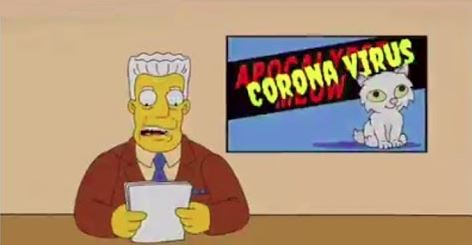

Fact or Fiction: The Simpsons predicted the coronavirus outbreak?
(KGTV) - Did an old episode of The Simpsons predict the coronavirus outbreak?
No.
A series of images put out online claims to show an episode in which residents of Springfield experience various symptoms of illness culminating with a news report showing an anchor with "Corona Virus" over his shoulder.
But the sickness images are actually from a 1993 episode in which the characters deal with an outbreak of 'Osaka Flu.'
The newscast image comes from a Season 22 episode in which the graphic read "Apocalypse Meow."